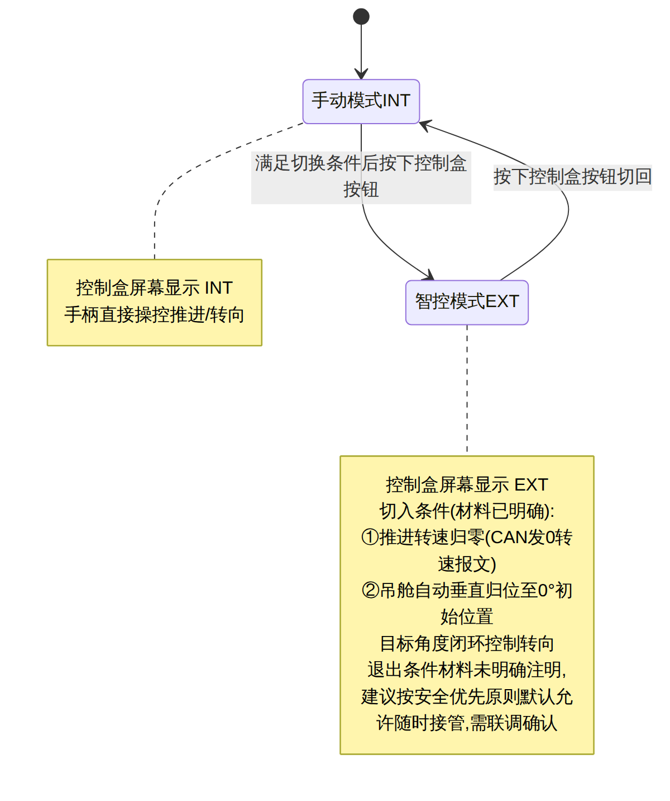
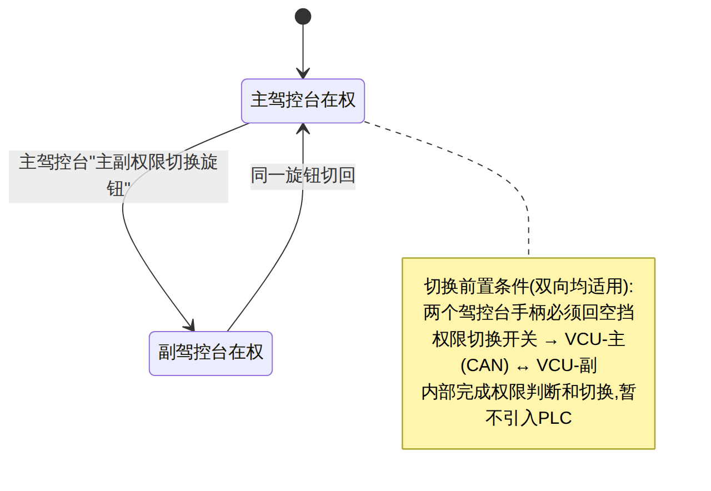

四、三条关键设计主线
4.1 有人驾驶 ⇄ 智控自主 切换(吊舱方案,本船适用)

| 要点 | 说明 |
|---|---|
| 切换方式 | 控制盒按钮,屏显 INT(手柄)/EXT(智控) |
| 通信 | 手柄经 CAN 与智控系统通信,做模式/功能切换 |
| 切入前置条件 | 推进转速归零 + 吊舱自动垂直归位(初始位置) |
| 待标定参数 | 吊舱 0–330° 与满舵方向盘圈数的映射关系,需联调阶段标定 |
| 退出条件 | 材料未明确,列入第八章待确认 |
| 备选架构(非本船) | 材料同时给出"螺旋桨方案":驾控台增设智控/有人旋钮,两路信号分别到 1#/2# 推进控制箱并做信号隔离,增加两路 4-20mA 转速反馈采集;退出人工前不要求转速为 0。仅供其它船型参考,本船以吊舱方案为准。 |
4.2 双驾控台站点权限切换

4.3 安全冗余设计
| 冗余维度 | 设计 |
|---|---|
| 急停 | 多点硬接线串联,任一急停触发即整体推进急停;两对常闭触点分别隔离 1#/2# 推进;主/副驾控台急停旋钮+甲板扩展急停(1–2 路)全部串联,示意图见协议图"急停串联接线-2路/3路" |
| 供电 | 驾控台必须支持双路供电(DC24V + AC220V);导轨开关电源(AC220→DC24 主电源)+ DCDC 隔离稳压(DC24→DC24 电源隔离)+ 二极管模块(双路转单路)+ 独立应急电源 |
| 操舵 | 配备应急舵,偏航/转舵失效时人员可随时接管操舵机构 |
| 控制/安全通道解耦 | 启停/故障/复位等常规操作经 VCU→CAN;急停/电池急停/电源启停等安全信号硬接线直连,不经 VCU、不经计算单元 —— 能停船的都是硬线,能优化操作的才上 CAN |
| 环境适应性 | 采控单元普遍满足 IP67、-30~70℃工作温度、GJB150.16A 振动、GJB150.11 盐雾;显控屏 IP66;驾控台台体 IP44 |